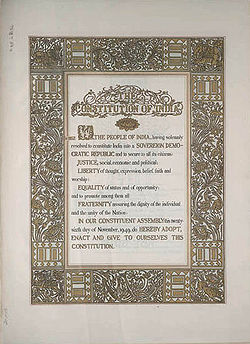
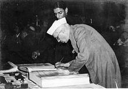

|
The Constitution of India is the supreme law of India. It is a living document, the permanent instrument which makes the government system work . It lays down framework defining fundamental political principles , establishes the structure, procedures, powers and duties of government institutions and sets
out fundamental rights,directive principles and duties of citizens. It is the longest written constitution of any sovereign country in the world. The nation is governed on the basis of this Constitution Dr.Bhimrao Ramji Ambedkar is a regarded as the chief architect of the Indian Constitution, but it was the Constituent Assembly that worked under Dr Ambedkar and his team that drafted the final copy of the Indian Constitution.
The constitution of India imparts constitutional supremacy and not parliamentary supremacy as it is not created by the Parliament but created by a constituent assembly and adopted by its people with a declaration in the preamble to constitution.Parliament cannot override the constitution.The Constitution was adopted by the Constituent Assembly on 26 November 1949, and came into effect on 26 January 1950. The date of 26 January was chosen to commemorate the Purna Swaraj declaration of independence of 1930.With its adoption , Union of India officially became the modern and contemporary Republic of India and it replaced the Government of India Act 1935 as the country's fundamental governing document. To ensure constitutional autochthony, the framers of constitution repealed the prior Acts of the British Parliament via the Article 395 of the constitution. India celebrates the coming into force of the constitution on 26 January each year as Republic Day. The Constitution declares India the sovereign, socialist, secular, democratic republic, assuring its citizens of a justice, equality, and liberty, and endeavors to promote fraternity among them. |
 |
Background :
The major portion of the Indian subcontinent was under British rule from 1857 to 1947. When the Constitution of India came into force on 26 January 1950, it repealed the Indian Independence Act. India ceased to be a dominion of the British Crown and became a sovereign democratic republic. Articles 5, 6, 7, 8, 9, 60, 324, 366, 367, 379, 380, 388, 391, 392, 393 and 394 came into force on 26 Nov 1949 and remaining articles on 26 Jan 1950.
Previous legislation used as sources :
The Constitution of India is drawn from many sources. Keeping in mind the needs and conditions of India the framers of the Constitution of India borrowed different features freely from previous legislation viz. Government of India Act 1858, Indian Councils Act 1861, Indian Councils Act 1892, Indian Councils Act 1909, Government of India Act 1919, Government of India Act 1935 and the Indian Independence Act 1947. The last legislation which led to the creation of the two independent nations of India and Pakistan provided for the division of the erstwhile Constituent Assembly into two, with each new assembly having sovereign powers transferred to it, to enable each to draft and enact a new constitution, for the separate states.
|
Constituent assembly :
The Constitution was drafted by the Constituent Assembly, which was elected by the elected members of the provincial assemblies.The 389 member Constituent Assembly took almost three years (two years, eleven months and eighteen days to be precise) to complete its historic task of drafting the Constitution for Independent India. During this period, it held eleven sessions covering a total of 165 days. Of these, 114 days were spent on the consideration of the Draft Constitution. On 29 August 1947, the Constituent Assembly set up a Drafting Committee under the Chairmanship of Dr. B.R. Ambedkar to prepare a Draft Constitution for India. While deliberating upon the draft Constitution, the Assembly moved, discussed and disposed of as many as 2,473 amendments out of a total of 7,635 tabled. Dr B.R. Ambedkar, Sanjay Phakey, Jawaharlal Nehru, C. Rajagopalachari, Rajendra Prasad, Sardar Vallabhbhai Patel, Kanaiyalal Munshi, Ganesh Vasudev Mavalankar, Sandipkumar Patel, Maulana Abul Kalam Azad, Shyama Prasad Mukherjee, Nalini Ranjan Ghosh, and Balwantrai Mehta were some important figures in the Assembly. There were more than 30 members of the scheduled classes. Frank Anthony represented the Anglo-Indian community, and the Parsis were represented by H. P. Modi. The Chairman of the Minorities Committee was Harendra Coomar Mookerjee, a distinguished Christian who represented all Christians other than Anglo-Indians. Ari Bahadur Gururng represented the Gorkha Community. Prominent jurists like Alladi Krishnaswamy Iyer, Benegal Narsing Rau and K. M. Munshi, Ganesh Mavlankar were also members of the Assembly.Sarojini Naidu, Hansa Mehta, Durgabai Deshmukh, Rajkumari Amrit Kaur and Vijayalakshmi Pandit were important women members. |
 |